※本篇文章是以AI（Chat gpt o3）撰寫，再由我部分增補而成，哈哈
2024年12月吃的😄 今天在11點開店的準時時刻，造訪了孤零零矗立在沖繩市海邦住宅區的「滑嚕嚕」。鮭魚粉色的建築上大大掛著「沖」「繩」「麵」的招牌，從遠處就很顯眼，完全是“街坊沖繩麵店”的架勢😊。
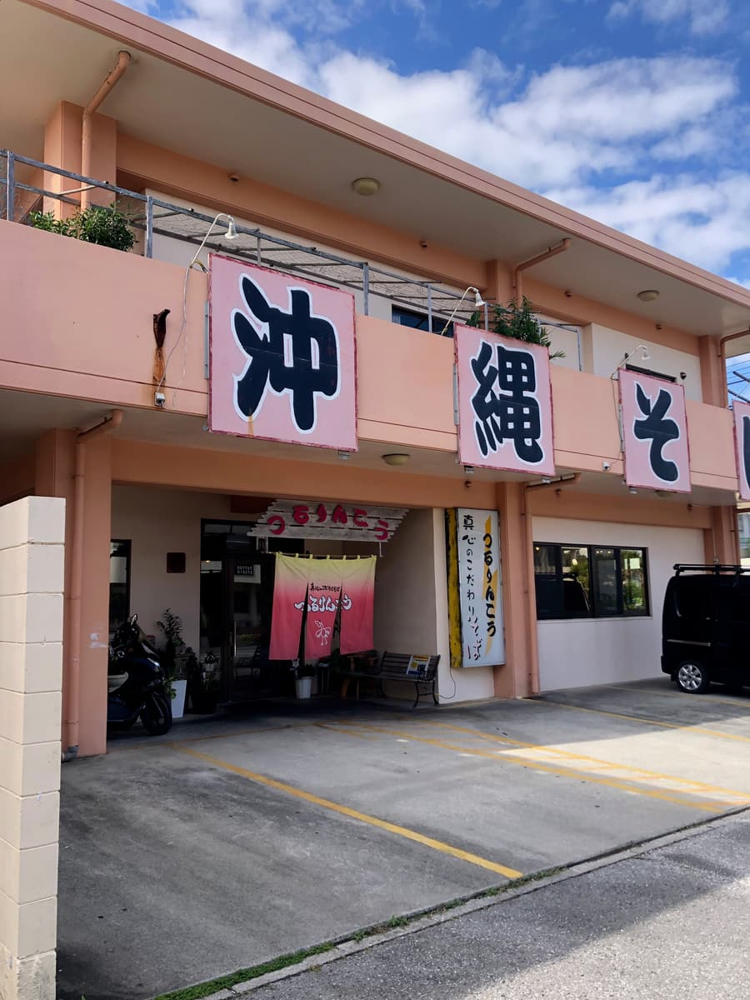
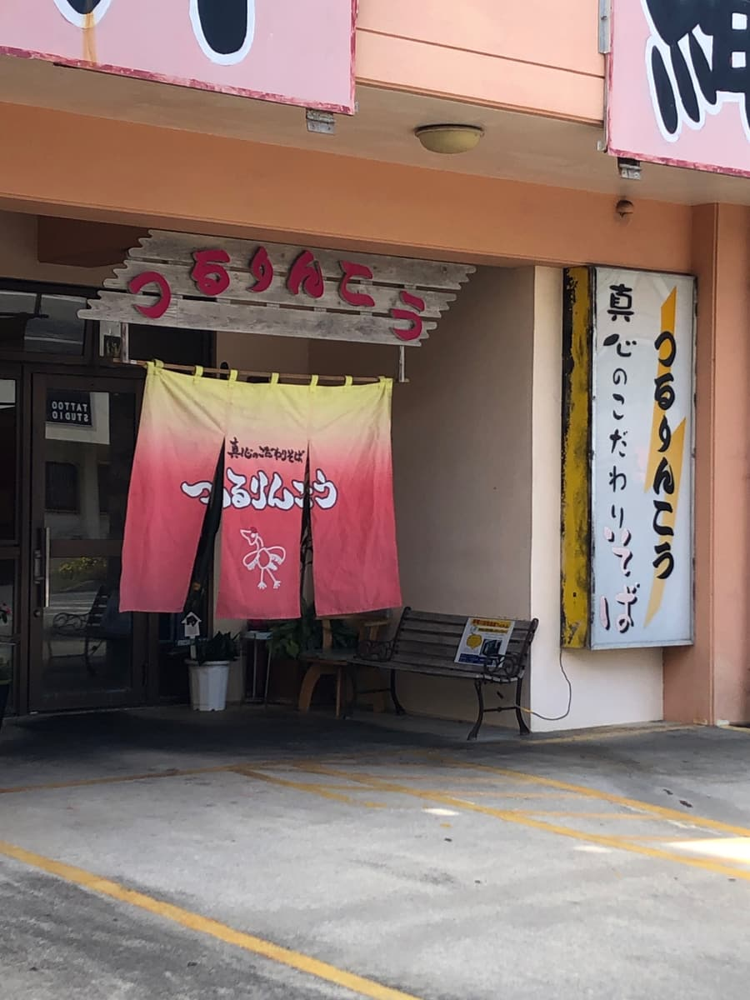
入口的漸層暖簾從紅色染成金黃色，店名的紅色切割文字有點昭和復古風，很可愛呢。開店的同時客人就一個接一個進來，讓人心裡暖暖的，覺得「啊，這是一家受在地人喜愛的店啊」。
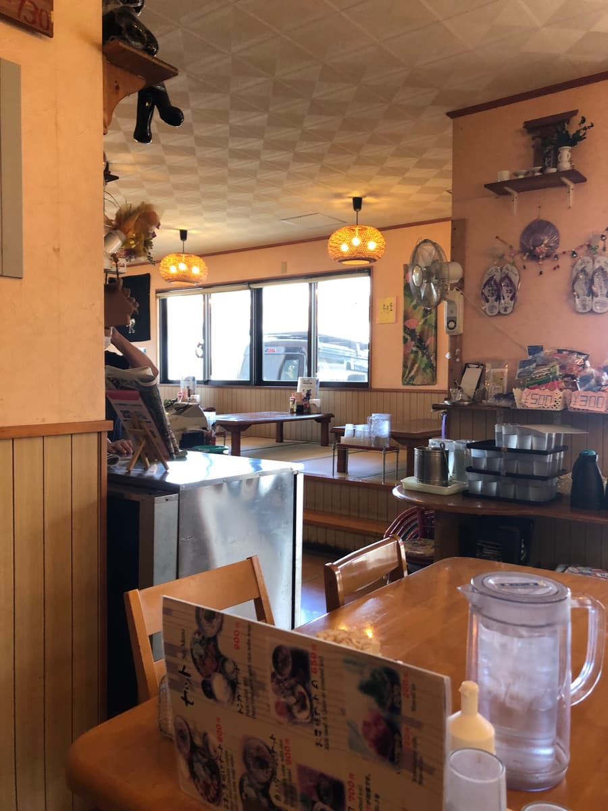
一踏進店內，木紋的腰牆、昭和風的磁磚天花板、圓形藤編燈柔和的燈光迎接著你。裡面是架高的和室座位，前面是桌位，每個位子都備有菜單、保溫瓶裝的茶和大大的調味料罐，有種像回到老家般的安心感呢。
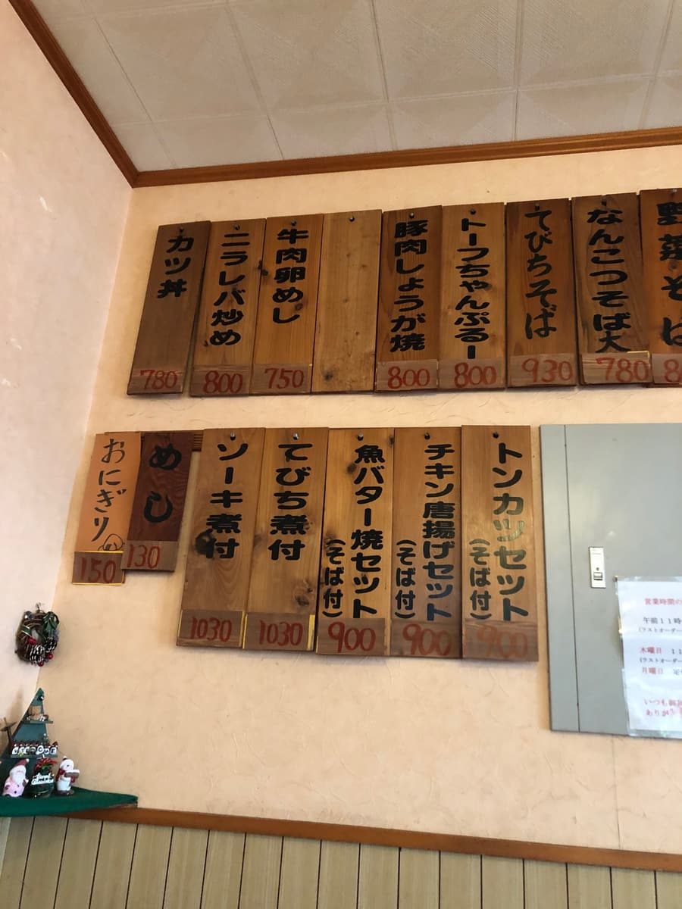
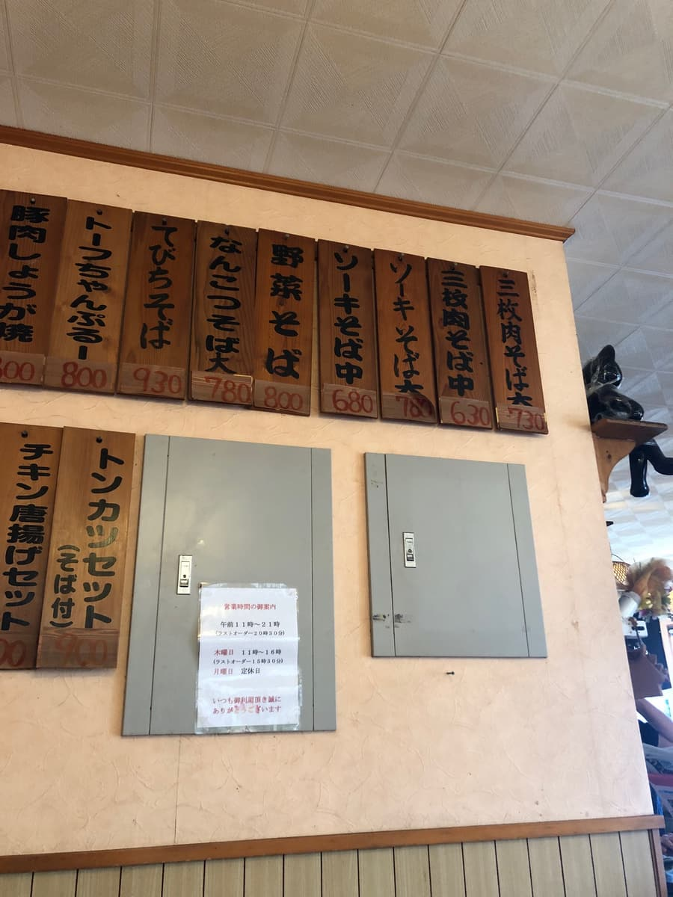
牆上整排都是木板菜單。排骨麵、三層肉麵、蔬菜麵自然不用說，還有什錦炒（Champuru）、炸豬排套餐，甚至連炒飯都有，「街坊食堂」和「沖繩麵店」合而為一的守備範圍之廣，讓我很佩服👍
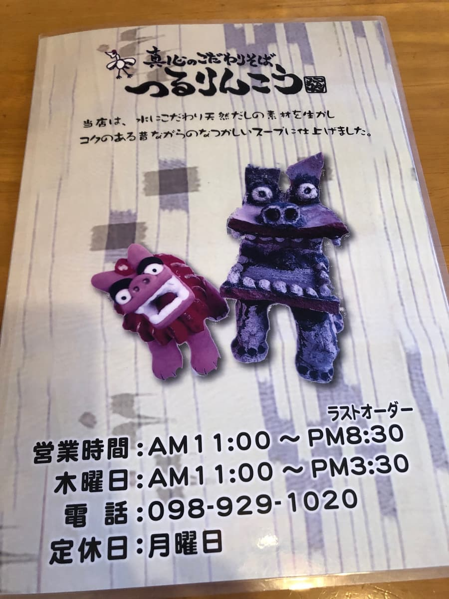
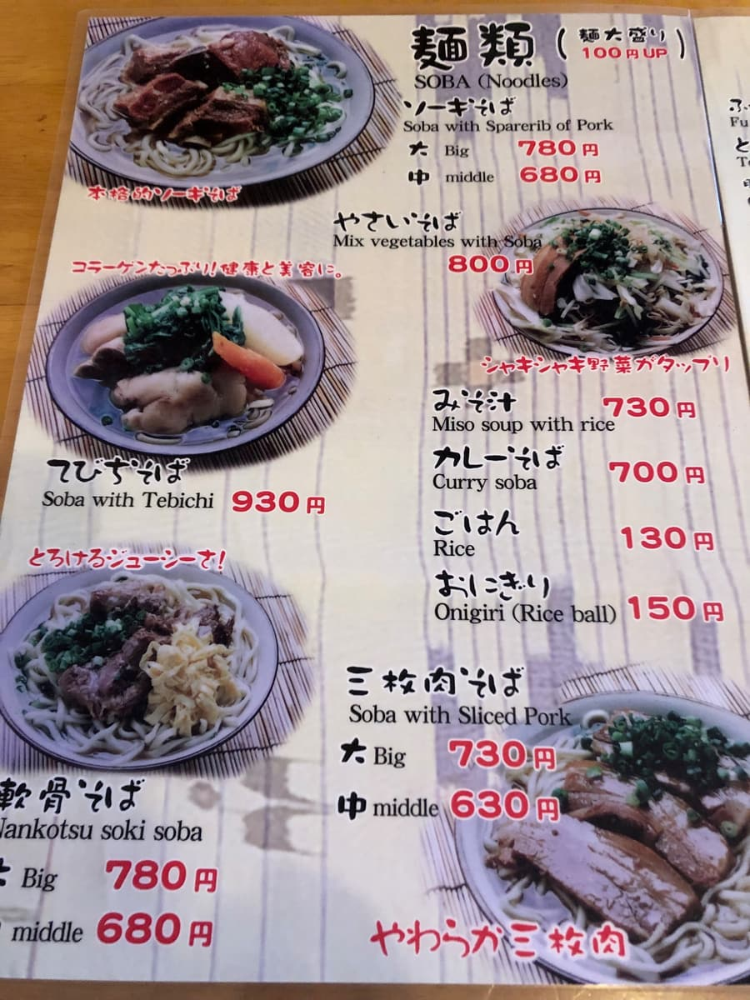
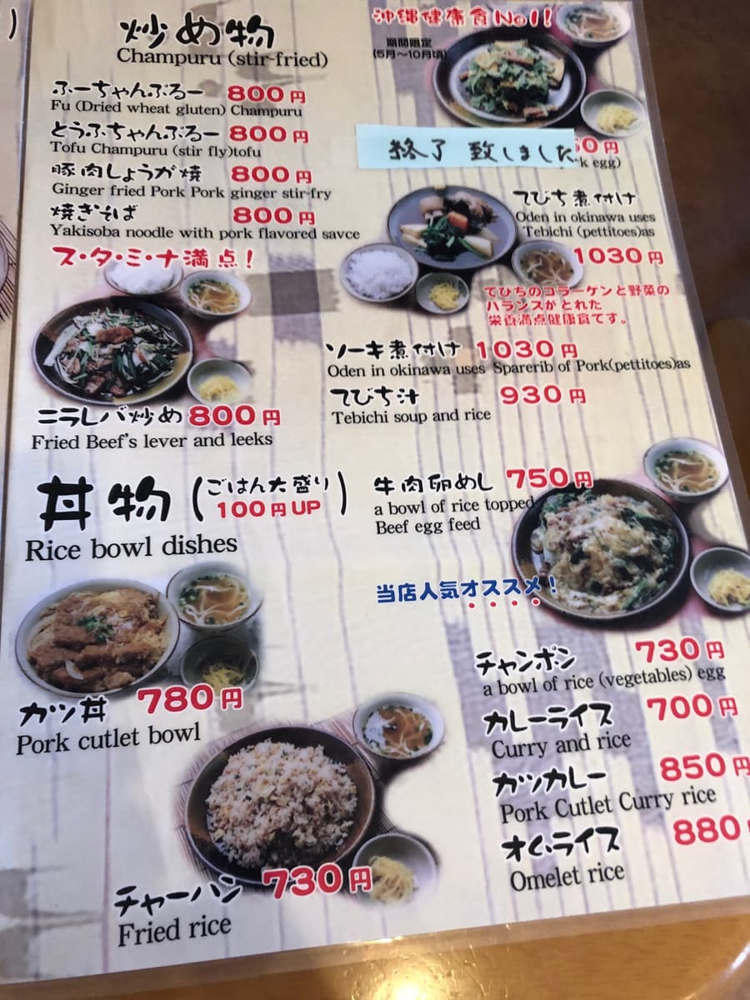
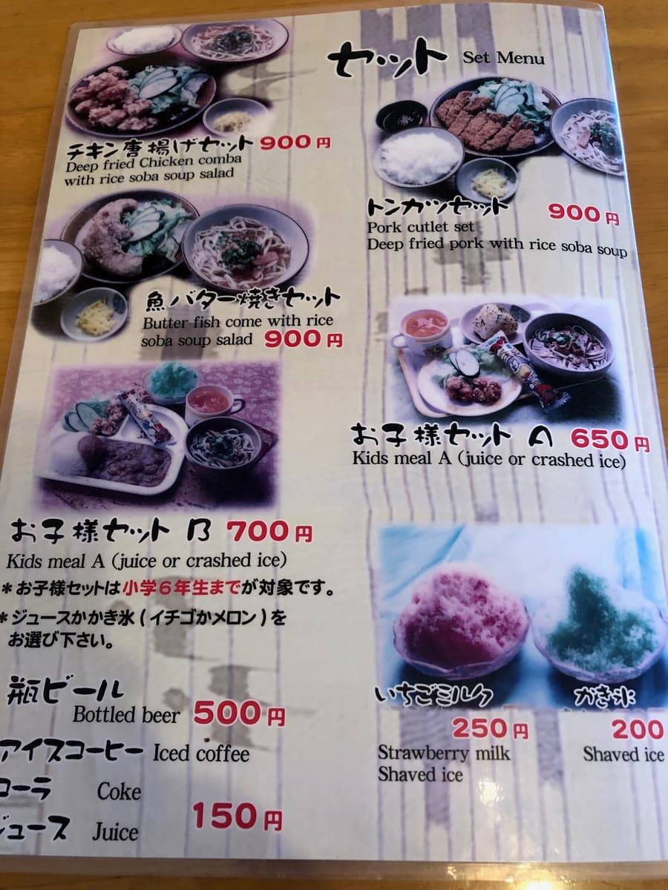
那麼，這次的目標是排骨麵大碗（780日圓）。沒多久，放在黑色方托盤上的一碗麵和空的小碟子就送來了。
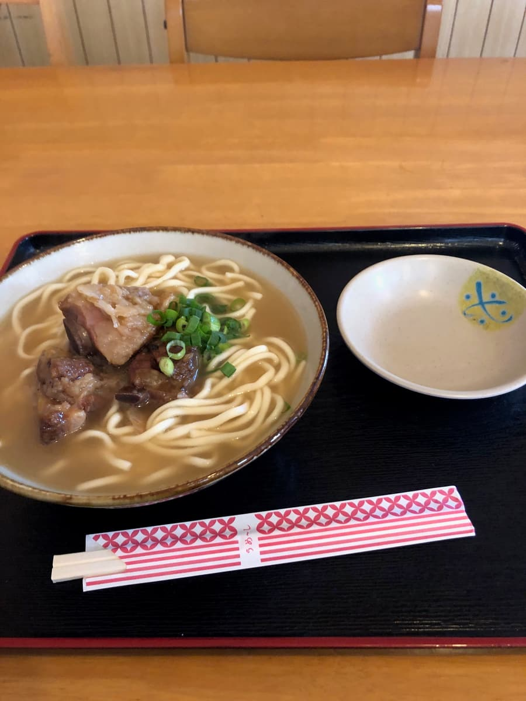
首先用湯匙喝一口湯。豬骨的甜味輕輕擴散開來，有種讓人不禁點頭說「這就是經典……！」的安心感呢。柴魚高湯的香氣藏在相當後面，豬的濃郁才是主角。
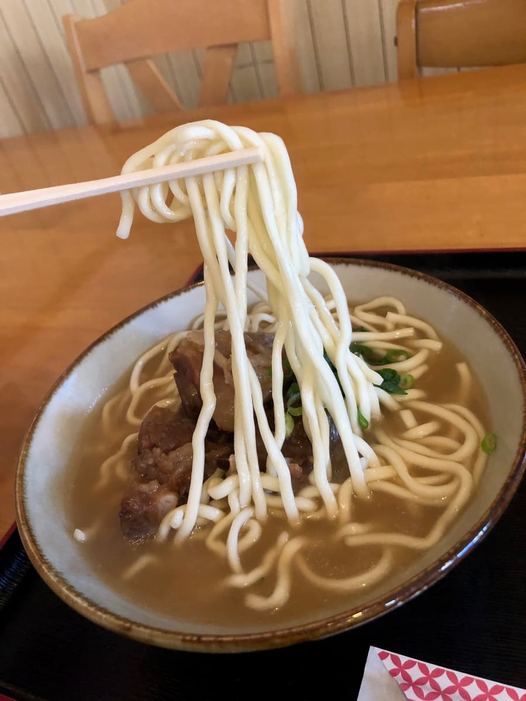
麵是中粗直麵。煮得偏軟。
配料是3塊大大的帶骨排骨。排骨用醬油和黑糖調味，相當偏甜。有筋感（口感偏韌）和小骨頭。
評分（9分/15分）：總的來說，「滑嚕嚕」的排骨麵雖然不華麗，卻是一碗充滿安心感、堪稱“沖繩市民日常麵”的麵呢。麵偏軟，湯頭以豬骨為主、微甜，排骨偏甜。我覺得是經典的沖繩麵😌
麵：★★★☆☆（3）
湯頭：★★★☆☆（3）
配料：★★★☆☆（3）